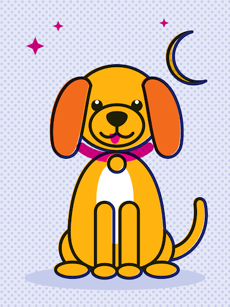

¡Buenas tardes, Arturo!
location_on Tulancingo, Hgo.
Baraja de adopciones activas
style
La baraja de hoy
Carta 1 de 12
auto_awesome
92 % compatible contigo
1
dark_mode

2 años
Talla Mediana
Esterilizada
LUNA
format_quote
«Sale de noche y de día, pasea en tu compañía.»
Paso
¡Cantar!
¡Me late!
history_toggle_off
Carta del día
Tulancingo Centro
Rocky · Lleva 214 días esperando
verified
Esta semana
¡Ya tienen casa!
volunteer_activism
Misión Tulancingo
Este mes faltan 36 kg de croquetas en Refugio La Esperanza.
64 kg reunidos
Meta: 100 kg